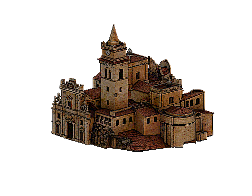

Chiesa di San Giorgio Martire

La Chiesa Madre di Caccamo, dedicata a San Giorgio Martire, è un imponente capolavoro che domina la monumentale piazza sottostante il Castello...
⚠️ Nota: I luoghi di culto sono attivi e dedicati alle funzioni liturgiche...
Orari:
Fasce Orarie Visite: Sabato e Domenica...